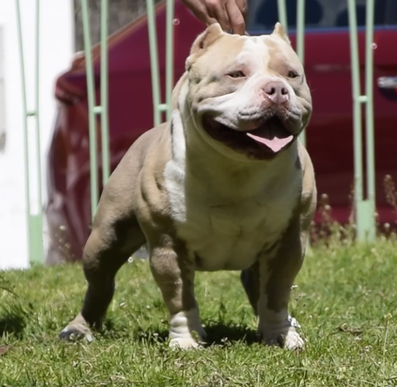

Principales caracteristicas
De la mezcla entre el American Pit Bull Terrier y el American Staffordshire Terrier nació el American Bully. Con la genética de parientes lejanos como el Bulldog inglés y el Staffordshire Bull Terrier, destaca por ser un perro atlético, fuerte, musculado, poderoso, con gran cabeza dominante, que cuenta con una mandíbula tremendamente potente y una cola no demasiado larga.
Es una raza intimidante, la que más músculo acumula en relación a su estructura física, lo que le proporciona una apariencia compacta y fortificada.
| A | B | K | C |

Existen cinco tipos distintos de American Bully:
American Bully Pocket:
De tamaño más reducido, musculoso y pequeño.
American Bully Classic:El más proporcionado y más fino de todos aún siendo también musculado, fuerte y rudo.
American Bully Standart:El modelo que inspira a toda la raza. Musculado, de tamaño medio y con una cabeza poderosa.
American Bully Extreme:Parecido al Standart, pero el doble de musculado. Ancho y poderoso con aspecto fiero.
American Bully XLParecido al American Bully Classic, de tamaño mucho mayor que sus compañeros de raza, pero más proporcionado y estilizado.
Variedad de colores
Existen 4 pigmentaciones:
- Black (negro)
- Blue (azul)
- Red (rojo)
- Silver (plateado)
Dentro de cada una de ellas existen distintos colores y combinaciones.
Más Informacion .